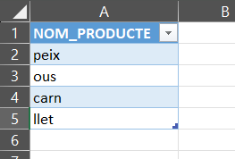
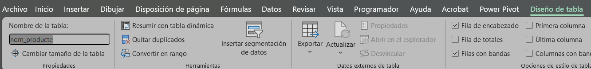

✔️ Validació de Dades a Excel
Creació de Taules i Validació de Dades entre Fulls a Excel
Aquest document explica els passos per crear una Taula a Excel, i com utilitzar dades d'una taula en un full per a una Validació de Dades en un altre full.
1. Com Crear una Taula a Excel
Una Taula d'Excel no és només un rang amb vores; proporciona funcionalitats addicionals com filtres automàtics, referències estructurades i la capacitat d'expandir-se automàticament.
Passos per crear una taula:
-
Seleccionar les Dades: Fes clic o selecciona qualsevol cel·la dins del rang de dades que vols convertir en taula.
-
Crea la Taula:
- Vés a la pestanya Insereix i fes clic al botó Taula (o utilitza la drecera de teclat:
Ctrl + T). - Alternativament: Vés a la pestanya Inici i al grup "Estils", fes clic a Dona format com a taula i tria un estil.
- Vés a la pestanya Insereix i fes clic al botó Taula (o utilitza la drecera de teclat:
-
Confirmar Rang: Apareixerà la finestra "Crea taula". Assegura't que el rang de cel·les sigui correcte.
-
Capçaleres: Marca la casella "La taula té capçaleres" si les teves dades inclouen una fila de títols per a les columnes.
-
Acceptar: Fes clic a Accepta. Vauràs una taula semblant a aquesta.

Finalment fem clic a sobre de la taula, i s'obrirà una pestanya on podem ficar un nom a la taula. És molt recomanable ficar noms a les taules per poder distingir-les fàcilment.

2. Validació de Dades des d'un Altre Full
Crea la taula on vols aplicar la validació de dades en un altre full, ha de ser una taula com la de l'apartat anterior
2.1. Aplicar la Validació de Dades
- Vés al Full de Destí: Navega al full on vols la llista desplegable.
- Seleccionar Cel·la: Fes clic a la cel·la o rang de cel·les on aplicaràs la llista.
- Obrir Validació de Dades:
- Vés a la pestanya Dades.
- Al grup "Eines de dades", fes clic a Validació de dades.

- Configurar la Llista:
- A la pestanya Configuració, a Permet, selecciona Llista.
- Al camp Origen, escriu el símbol d'igual (
=) seguit de la funció: =INDIRECTE("nom_taula_referenciada")

!!! nota "Informació sobre la funció"
La funció `INDIRECTE` permet que Excel llegeixi la referència a la taula d'un altre full en la validació de dades. És **crucial** utilitzar el nom de la taula.
- Acceptar: Fes clic a Accepta.
Ara, la cel·la a Full1 tindrà una llista desplegable amb els valors de la columna de la teva taula a Full2. Si afegeixes o elimines elements a la taula d'origen, la llista desplegable s'actualitzarà automàticament (si has utilitzat una referència a la taula o un rang dinàmic).